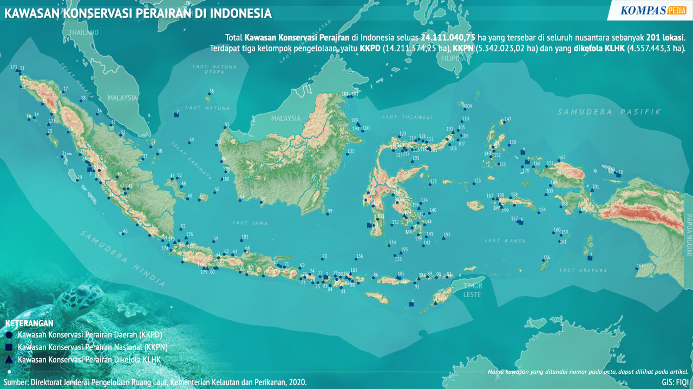

1. Pada tahun 2025, mencegah dan mengurangi pencemaran laut.
2. Pada tahun 2020, mengelola dan melindungi ekosistem laut dan pesisir, memperkuat ketahanannya, dan pemulihan guna laut.
3. Pada tahun 2020, mengatasi dampak pengasaman laut.
4. Pada tahun 2020, mengakhiri penangkapan ikan yang berlebihan dan illegal.
5. Pada tahun 2020, melestarikan setidaknya 10% wilayah pesisir dan laut.
6. Pada tahun 2020, melarang beberapa bentuk subsidi perikanan.
7. Pada tahun 2030, meningkatkan manfaat ekonomi negara kepulauan yang kurang berkembang dari pemanfaatan sumber daya laut hingga pariwisata.
8. Meningkatkan pengetahuan ilmiah, mengembangkan kapasitas penelitian dan transfer teknologi kelautan.
9. Menyediakan akses bagi nelayan skala kecil terhadap sumber daya laut dan pasar.
10. Menerapkan hukum laut sebagaimana tercermin dalam UNCLOS.
Tujuan ekosistem lautan difokuskan pada 2 kebijakan utama yaitu:
Upaya yang dilakukan untuk mewujudkan tujuan tersebut adalah:
Indonesia memiliki potensi laut yang luar biasa, seperti terumbu karang, padang lamun, mangrove, dan berbagai spesies ikan. Keindahan pulau tropis di Indonesia menjadi daya tarik wisata bahari. Namun, Indonesia memiliki berbagai masalah yang mengancam ekosistem laut Indonesia, seperti kerusakan terumbu karang, pencemaran, berubahan iklim, dan overfishing.
Masalah yang paling serius dan berdampak adalah penangkapan ikan berlebihan atau overfishing. Bahkan, beberapa wilayah di Indonesia mengalami penurunan stok ikan yang signifikan seperti Laut Natuna, Selat Karimata, Laut Banda, Laut Sulawesi, dan lain-lain. Penangkapan ikan secara illegal dan berlebihan banyak dilakukan oleh kapal-kapal dari negara Vietnam, Filipina, dan Malaysia.
Kasus-Kasus Penangkapan Ikan Berlebihan
Pada tanggal 26 Desember 2014, kapal MV Hai Fa ditangkap di perairan Wanam, Merauke, Papua. Kapal tersebut mematikan Automatic Identification System (AIS), agar tidak terditeksi oleh kapal yang yang sedang berpatroli di Indonesia. Hasil tangkapannya berupa 800 ton ikan beku, 100 ton udang beku, dan 66 ton ikan hiu martil dan hio koboi dimana hiu-hiu tersebut dilindungi dan dilarang untuk ditangkap dan diekspor ke luar negeri.
Pada tanggal 17 Agustus 2024, kapal dari Vietnam mencuri ikan di Perairan Natuna Utara. Pencurian tersebut dilakukan menggunakan jaring trawl, dimana merupakan alat terlarang karena dapat merupakn ekosistem laut. Hasil tangkapan sebanyak kurang lebih 1 ton ikan pelagis.
Coral Triangle Initiative (CTI)
Coral Triangle Initiative (CTI) merupakan kerja sama multilateral 6 negara, yaitu Indonesia, Malaysia, Papua Nugini, Filipina, Kepulauan Solomon, dan Timor Leste. Organisasi ini bertujuan untuk melestarikan sumber daya laut dan pesisir dengan cara mengatasi isu ketahanan pangan, perubahan iklim, dan keanegaragaman hayati laut. Indonesia-lah yang pertama kali mengajukan kerja sama ini, dipimpin oleh Presiden Susilo Bambang Yudhoyono, pada tahun 2009. Ini merupakan kerja sama multilateral pertama yang berfokus pada ketahanan pangan melalui pengelolahan sumber daya laut.
World Wide Fund for Nature (WWF)
World Wide Fund for Nature (WWF) merupakan orgnasisasi non-pemerintah. WWF berfokus pada alam, penelitian, dan restorasi lingkungan. WWF bekerja sama dengan Indonesia untuk membantu membudidayakan dan menjaga sumber data laut, karena sumber daya laut ini sangat penting bagi kondisi perekonomian regional maupun global. WWF melakukan konservasi perairan pada kawasan tertentu, memelihara biota laut yang menjadi sasaran wisata, dan juga memberi perlindungan spesies laut yang terancam, seperti penyu, hiu, paus, dan lain-lain.
ASEAN Framework on Marine Debris
ASEAN Framework on Marine Debris adalah aksi yang diluncurkan ASEAN untuk mengatasi masalah polusi sampah di laut Asia Tenggara. Kerja sama regional ini beranggotakan negara-negara ASEAN. Beberapa tindakan yang dilakukan untuk mewujudkan ASEAN Framework on Marine Debris:
Sumber:
https://sdgscenter.unair.ac.id/mengenal-lebih-dekat-sdg-14-jaga-ekosistem-laut-bersama/
https://bappeda.jogjaprov.go.id/dataku/sdgs/detail/14-menjaga-ekosistem-laut#:~:text=Tujuan%2014%20TPB%20adalah%20melestarikan,yang%20diukur%20melalui%2015%20indikator.
https://lautsehat.id/ekonomi-hijau/tifa/menghadapi-tantangan-dan-peluang-sdgs-no-14-konservasi-dan-pemanfaatan-lautan-perairan-dan-sumber-daya-lautan-secara-berkelanjutan-di-indonesia/
https://bappeda.jogjaprov.go.id/dataku/sdgs/detail/14-menjaga-ekosistem-laut
https://makassar.antaranews.com/berita/39492/indonesia-kerja-sama-enam-negara-perangi-overfishing
https://www.wwf.id/id/learn/marine-fisheries